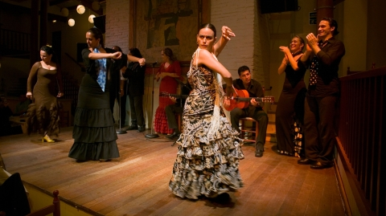

Recommendations for Spain
Spain is a country where any type of tourist can be appeased. From the tourists who want to explore historical sites to tourists who just want to enjoy nature or perhaps want to go to a lively city.
Spain has an abundance of things to offer. I've listed my personal recommendations of things that would interest me personally but I have included additional items which I think a variety of people would enjoy as well
- My top recommendation is to visit the Balearic Islands !
- Some of the most beautiful places to visit on Earth!
- The islands are one of the best places to relax in Europe! In fact many people around Europe migrate here during the summers to relax, There is an abundance of British tourists in particular !
- Some of the Islands that make up the Balearic Islands are:
- Ibiza is known worldwide for the abundance and variety of different clubs keeping the party going on no matter what time of day
- Mallorca is the most popular tourist destination in the meditterranean. Consists of coves, limestone mountains, wineries among other attractions
- Menorca is the most beautiful of the bunch. From its beautiful beaches to the meadows filled with wild flowers. The super laid back atmosphere of this island is perfect for families with children

- I also recommend visting the The Church of the Sacred Family
- considered to be one of the longest ongoing projexts, Been under construction since 1882!
- Designed by Antoni Gaudi it is known for its intricate designs and sheer scale !
- Attend a authentic Flamenco show
- Flamenco features the song, dance and guitar music that has developed over the years from the songs of the Roma people.
